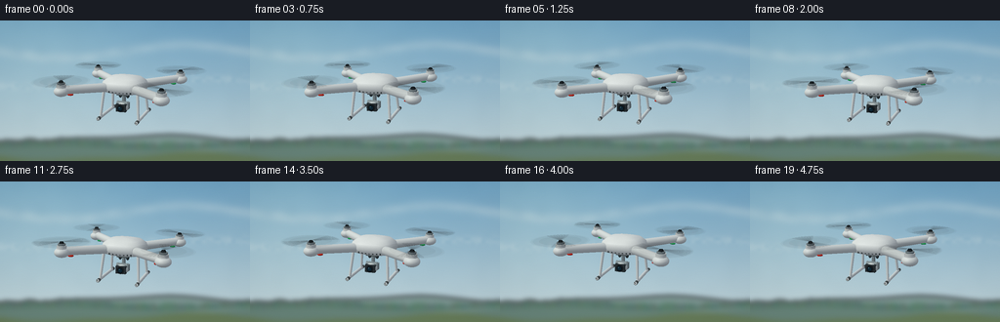
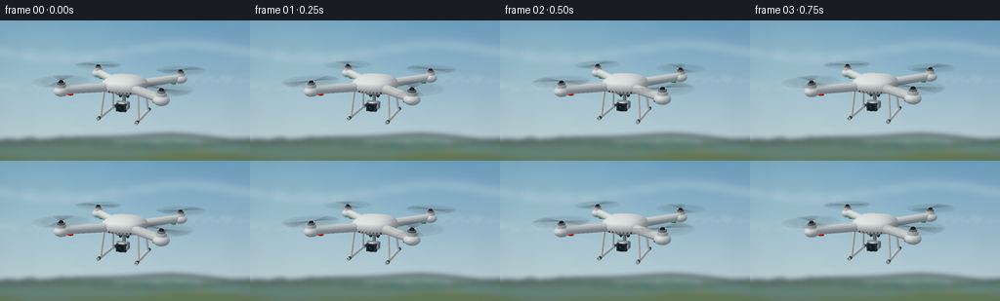

CODING AGENTS AS PIXEL WORLD MODELS
traex/GPT-6.1-Sol · instance_preservation_0040
点击播放 · 原生 RGB 像素
逐轮保存的候选
回放视频、检查图与代码变化。
每份候选均可单独播放。实际图片检查记录在下方工具轨迹中。
候选 01播放与检查图
点击播放 · 原生 RGB 像素


展开代码变化
--- 上一保存版本
+++ 本次保存版本
@@ -0,0 +1,258 @@
+from pathlib import Path
+import math
+import numpy as np
+from PIL import Image, ImageDraw, ImageFilter
+import artifact_io
+
+ROOT=Path(__file__).resolve().parent
+W,H=256,144
+S=3
+WW,HH=W*S,H*S
+rng=np.random.default_rng(40)
+
+# A quiet, distant rural landscape, kept well out of focus behind the aircraft.
+def noise(w,h,size,seed):
+ r=np.random.default_rng(seed)
+ a=r.random((size,max(2,round(size*w/h)))).astype(np.float32)
+ return np.asarray(Image.fromarray(a,mode='F').resize((w,h),Image.Resampling.BICUBIC))
+def background():
+ yy,xx=np.mgrid[:HH,:WW].astype(float)
+ v=yy/HH
+ upper=np.array([110,161,193]); lower=np.array([211,222,220])
+ sky=upper[None,None,:]*(1-v[...,None]*.86)+lower[None,None,:]*(v[...,None]*.86)
+ glow=np.exp(-((xx/(WW)-.14)**2/.15+(yy/HH-.1)**2/.4))
+ sky+=glow[...,None]*np.array([15,12,5])
+ n=noise(WW,HH,12,31)
+ fine=noise(WW,HH,38,9)
+ # Long, almost transparent bands of thin high cloud.
+ clouds=np.exp(-((v-.22-.048*np.sin(xx/120))/.042)**2)*(.5+.5*n)
+ clouds+=.65*np.exp(-((v-.44-.028*np.sin(xx/170+1))/.033)**2)*fine
+ clouds=np.clip(clouds*.22,0,.28)
+ sky=sky*(1-clouds[...,None])+np.array([236,239,233])*clouds[...,None]
+ sky+=(n[...,None]-.5)*2
+ im=Image.fromarray(np.uint8(np.clip(sky,0,255)))
+ layer=Image.new('RGBA',(WW,HH))
+ d=ImageDraw.Draw(layer)
+ def hill(base,amplitude,phase,col):
+ path=[(x, int(S*(base+amplitude*math.sin(x/WW*6+phase)+amplitude*.35*math.sin(x/WW*14+phase)))) for x in range(0,WW+1,3)]
+ d.polygon(path+[(WW,HH),(0,HH)],fill=col)
+ hill(121,3,1,(125,151,147,255))
+ hill(130,3,3,(102,130,120,255))
+ hill(139,3.6,0,(101,122,88,255))
+ # Soft irregular tree crowns along the far ridge.
+ r=np.random.default_rng(19)
+ for x in range(-10,WW+15,7):
+ y=S*(128+2*math.sin(x/WW*7+3))
+ h=r.uniform(2,6)*S
+ color=(int(r.integers(77,95)),int(r.integers(108,126)),int(r.integers(99,111)),255)
+ d.ellipse((x-7,y-h,x+9,y+6),fill=color)
+ layer=layer.filter(ImageFilter.GaussianBlur(2.7*S))
+ im=Image.alpha_composite(im.convert('RGBA'),layer).convert('RGB')
+ return np.asarray(im).astype(float)
+BG=background()
+
+# Small, self-contained triangle renderer: all mesh geometry is authored below.
+vertices=[]; normals=[]; triangles=[]; colors=[]
+def mesh(v,f,color,n=None):
+ v=np.asarray(v,dtype=float); f=np.asarray(f,dtype=int)
+ if n is None:
+ n=np.zeros_like(v)
+ for tri in f:
+ a,b,c=v[tri]
+ nn=np.cross(b-a,c-a)
+ for ix in tri:n[ix]+=nn
+ n/=np.maximum(np.linalg.norm(n,axis=1,keepdims=True),1e-9)
+ off=len(vertices)
+ vertices.extend(v); normals.extend(n); triangles.extend(f+off); colors.extend([color]*len(f))
+def ellipsoid(center,scale,color,nu=28,nv=14):
+ v=[];n=[];f=[]
+ for j in range(nv+1):
+ phi=math.pi*j/nv
+ for i in range(nu):
+ th=math.tau*i/nu
+ p=np.array([math.sin(phi)*math.cos(th),math.cos(phi),math.sin(phi)*math.sin(th)])
+ v.append(np.array(center)+np.array(scale)*p)
+ norm=p/np.array(scale);norm/=np.linalg.norm(norm);n.append(norm)
+ for j in range(nv):
+ for i in range(nu):
+ a=j*nu+i;b=j*nu+(i+1)%nu;c=(j+1)*nu+i;dd=(j+1)*nu+(i+1)%nu
+ f.extend([[a,c,b],[b,c,dd]])
+ mesh(v,f,color,np.array(n))
+def cylinder(a,b,r,color,segments=20,r2=None):
+ a=np.array(a);b=np.array(b);axis=b-a;axis=axis/np.linalg.norm(axis)
+ u=np.cross(axis,[0,1,0] if abs(axis[1])<.9 else [1,0,0]);u=u/np.linalg.norm(u);v=np.cross(axis,u)
+ vs=[];ns=[];f=[];r2=r if r2 is None else r2
+ for point,rad in [(a,r),(b,r2)]:
+ for i in range(segments):
+ n=math.cos(i*math.tau/segments)*u+math.sin(i*math.tau/segments)*v
+ vs.append(point+rad*n);ns.append(n)
+ for i in range(segments):
+ j=(i+1)%segments
+ f.extend([[i,j,i+segments],[j,j+segments,i+segments]])
+ # Separate cap vertices preserve crisp machined edges.
+ for point,rad,norm in [(a,r,-axis),(b,r2,axis)]:
+ k=len(vs);vs.append(point);ns.append(norm)
+ for i in range(segments):
+ vs.append(point+rad*(math.cos(i*math.tau/segments)*u+math.sin(i*math.tau/segments)*v));ns.append(norm)
+ for i in range(segments):f.append([k,k+1+i,k+1+(i+1)%segments])
+ mesh(vs,f,color,np.array(ns))
+def box(center,size,color):
+ c=np.array(center);s=np.array(size)/2
+ v=np.array([[-1,-1,-1],[1,-1,-1],[1,1,-1],[-1,1,-1],[-1,-1,1],[1,-1,1],[1,1,1],[-1,1,1]])*s+c
+ # Each face independent for clean surface normals.
+ faces=[[0,3,2,1],[4,5,6,7],[0,4,7,3],[1,2,6,5],[0,1,5,4],[3,7,6,2]]
+ for face in faces:
+ p=v[face];mesh(p,[[0,1,2],[0,2,3]],color)
+
+white=[222,225,224]; pearl=[229,231,229]; dark=[32,39,43];silver=[140,151,154]
+motors=[]
+for x in [-1.18,1.18]:
+ for z in [-1.08,1.08]:
+ motors.append((x,.26,z))
+ root=np.array([x*.22,.005,z*.22]);end=np.array([x,.055,z])
+ cylinder(root,end,.112,white,24,r2=.10)
+ # Plastic fairing flowing into the cylindrical motor mount.
+ ellipsoid((x,.025,z),(.18,.12,.18),white,24,12)
+ cylinder((x,.00,z),(x,.19,z),.123,pearl,24,r2=.112)
+ cylinder((x,.18,z),(x,.235,z),.091,silver,24)
+ cylinder((x,.231,z),(x,.278,z),.062,dark,20,r2=.042)
+ # Tiny under-arm navigation lights: front red, rear green.
+ light=[203,40,28] if z>0 else [37,169,88]
+ ellipsoid((x*.87,-.072,z*.87),(.075,.026,.056),light,20,8)
+
+# Molded rounded-square central canopy.
+levels=[(-.145,.38,.32),(-.10,.52,.42),(.015,.56,.46),(.13,.52,.43),(.225,.39,.33),(.265,.20,.17),(.273,.001,.001)]
+v=[];f=[];N=48
+for y,rx,rz in levels:
+ for i in range(N):
+ a=i*math.tau/N;c=math.cos(a);s=math.sin(a)
+ v.append([rx*math.copysign(abs(c)**.63,c),y,rz*math.copysign(abs(s)**.63,s)])
+for j in range(len(levels)-1):
+ for i in range(N):
+ a=j*N+i;b=j*N+(i+1)%N;c=(j+1)*N+i;dd=(j+1)*N+(i+1)%N
+ f.extend([[a,c,b],[b,c,dd]])
+mesh(v,f,pearl)
+# Discrete seams, intake slots, and restrained branding-free technical details.
+for x in [-.26,-.17,-.08,.01,.10,.19,.28]:
+ box((x,-.074,.423),(.031,.041,.009),[66,74,75])
+box((0,.266,0),(.14,.003,.045),[169,178,179])
+# Twin white landing skids, clearly separated from the flying body.
+for x in [-.43,.43]:
+ for z in [-.31,.34]:
+ cylinder((x,-.095,z),(x*1.13,-.72,z*1.29),.036,white,16,r2=.03)
+ cylinder((x*1.13,-.72,-.54),(x*1.13,-.72,.61),.039,white,20)
+ for z in [-.50,.56]:
+ cylinder((x*1.13,-.724,z-.05),(x*1.13,-.724,z+.05),.043,[80,86,87],16)
+# Stabilized camera and gimbal suspension below the aircraft.
+box((0,-.164,.08),(.29,.06,.29),[90,99,101])
+for x in [-.095,.095]:
+ ellipsoid((x,-.22,.07),(.045,.07,.045),[53,61,65],16,8)
+cylinder((0,-.22,.08),(0,-.385,.08),.046,silver,16)
+cylinder((-.14,-.405,.19),(.14,-.405,.19),.064,silver,20)
+box((.145,-.45,.17),(.042,.16,.13),silver)
+ellipsoid((0,-.485,.20),(.166,.126,.139),[204,210,209],24,12)
+box((0,-.485,.283),(.25,.185,.105),[50,58,62])
+cylinder((0,-.485,.315),(0,-.485,.36),.091,[34,39,42],32)
+cylinder((0,-.485,.36),(0,-.485,.366),.067,[13,25,33],32)
+cylinder((0,-.485,.367),(0,-.485,.37),.047,[20,48,63],28)
+ellipsoid((-.019,-.46,.372),(.015,.009,.004),[100,157,173],12,6)
+
+V=np.array(vertices);NO=np.array(normals);F=np.array(triangles);C=np.array(colors)/255
+# Camera looks slightly down at the hovering craft; a mild telephoto perspective.
+eye=np.array([3.5,2.05,8.0]);forward=-eye/np.linalg.norm(eye)
+right=np.cross(forward,[0,1,0]);right/=np.linalg.norm(right);up=np.cross(right,forward)
+CAM=np.stack([right,up,forward],axis=1)
+light=np.array([-.5,.85,.7]);light/=np.linalg.norm(light)
+
+def rotation(t):
+ yaw=.08+.035*math.sin(t*.75)
+ pitch=.016*math.sin(t*1.7+.5);roll=.018*math.sin(t*1.4)
+ cy,sy=math.cos(yaw),math.sin(yaw);cp,sp=math.cos(pitch),math.sin(pitch);cr,sr=math.cos(roll),math.sin(roll)
+ return np.array([[cy,0,sy],[0,1,0],[-sy,0,cy]])@np.array([[1,0,0],[0,cp,-sp],[0,sp,cp]])@np.array([[cr,-sr,0],[sr,cr,0],[0,0,1]])
+def project(v):
+ q=(v-eye)@CAM
+ p=np.stack([WW*.5+S*370*q[:,0]/q[:,2],S*67-S*370*q[:,1]/q[:,2]],axis=1)
+ return p,q[:,2]
+
+def raster(im,depth,p,z,f,col,alpha=None):
+ for k,tri in enumerate(f):
+ pp=p[tri];zz=z[tri]
+ x0=max(0,int(np.floor(pp[:,0].min())));x1=min(WW-1,int(np.ceil(pp[:,0].max())))
+ y0=max(0,int(np.floor(pp[:,1].min())));y1=min(HH-1,int(np.ceil(pp[:,1].max())))
+ if x1<x0 or y1<y0:continue
+ a,b,c=pp
+ den=(b[1]-c[1])*(a[0]-c[0])+(c[0]-b[0])*(a[1]-c[1])
+ if abs(den)<1e-8:continue
+ yy,xx=np.mgrid[y0:y1+1,x0:x1+1];xx=xx+.5;yy=yy+.5
+ w0=((b[1]-c[1])*(xx-c[0])+(c[0]-b[0])*(yy-c[1]))/den
+ w1=((c[1]-a[1])*(xx-c[0])+(a[0]-c[0])*(yy-c[1]))/den
+ w2=1-w0-w1
+ zd=w0*zz[0]+w1*zz[1]+w2*zz[2]
+ dd=depth[y0:y1+1,x0:x1+1]
+ ok=(w0>=-1e-6)&(w1>=-1e-6)&(w2>=-1e-6)&(zd<dd)
+ if not ok.any():continue
+ tile=im[y0:y1+1,x0:x1+1]
+ if col.ndim==3:
+ rgb=w0[...,None]*col[k,0]+w1[...,None]*col[k,1]+w2[...,None]*col[k,2]
+ else:rgb=col[k]
+ if alpha is None:
+ tile[ok]=rgb[ok] if np.ndim(rgb)>1 else rgb;dd[ok]=zd[ok]
+ else:
+ al=alpha[k];tile[ok]=tile[ok]*(1-al)+(rgb[ok] if np.ndim(rgb)>1 else rgb)*al
+
+def propellers(im,depth,R,offset,t):
+ # Exposure-integrated propeller disks and partial swept blades, not stationary fans.
+ vs=[];fs=[];cs=[];als=[]
+ for j,center in enumerate(motors):
+ center=np.array(center)+[0,.012,0]
+ # A low-opacity inner rotor blur with a feathered outer band.
+ for lo,hi,opacity in [(.08,.48,.125),(.48,.62,.08),(.62,.67,.035)]:
+ for i in range(64):
+ a=i*math.tau/64;b=(i+1)*math.tau/64
+ off=len(vs)
+ for radius,ang in [(lo,a),(hi,a),(hi,b),(lo,b)]:
+ vs.append(center+np.array([radius*math.cos(ang),0,radius*math.sin(ang)]))
+ fs.extend([[off,off+1,off+2],[off,off+2,off+3]])
+ cs.extend([[49,56,59]]*2);als.extend([opacity]*2)
+ phase=t*29+j*1.2
+ for blade in [0,math.pi]:
+ # Several exposures of a slim, gently swept paddle blade.
+ for s in range(7):
+ angle=phase+blade+(s-3)*.13
+ shape=[(.045,-.028),(.19,-.04),(.56,-.051),(.655,-.015),(.64,.028),(.30,.045),(.07,.033)]
+ off=len(vs)
+ for xx,zz in shape:
+ vs.append(center+np.array([xx*math.cos(angle)-zz*math.sin(angle),.003,xx*math.sin(angle)+zz*math.cos(angle)]))
+ for k in range(1,len(shape)-1):
+ fs.append([off,off+k,off+k+1]);cs.append([40,45,48]);als.append(.10)
+ vv=np.array(vs)@R.T+offset
+ p,z=project(vv)
+ raster(im,depth,p,z,np.array(fs),np.array(cs),np.array(als))
+
+frames=[]
+for i in range(20):
+ t=i/4
+ R=rotation(t)
+ offset=np.array([.021*math.sin(t*1.1),.027*math.sin(t*1.9),.016*math.sin(t*.9)])
+ vv=V@R.T+offset; nn=NO@R.T
+ p,z=project(vv)
+ diffuse=np.maximum(0,nn@light)
+ # Skylight fill, warm key light, and subtle shiny plastic highlights.
+ view=eye-vv;view/=np.linalg.norm(view,axis=1,keepdims=True)
+ half=view+light;half/=np.linalg.norm(half,axis=1,keepdims=True)
+ specular=np.maximum(0,np.sum(nn*half,axis=1))**40
+ fill=.53+.16*(nn[:,1]*.5+.5)
+ shade=fill[:,None]*np.array([.94,.98,1.03])+diffuse[:,None]*np.array([.35,.34,.30])
+ vc=C[:,None,:]*shade[F]*255 + specular[F][...,None]*17
+ im=BG.copy();depth=np.full((HH,WW),np.inf)
+ raster(im,depth,p,z,F,np.clip(vc,0,255))
+ propellers(im,depth,R,offset,t)
+ result=Image.fromarray(np.uint8(np.clip(im,0,255))).resize((W,H),Image.Resampling.LANCZOS)
+ a=np.asarray(result).astype(float)
+ # A restrained photographic grain and soft edge falloff.
+ yy,xx=np.mgrid[:H,:W]
+ vignette=1-.025*((xx-W/2)/(W/2))**2-.017*((yy-H/2)/(H/2))**2
+ a=a*vignette[...,None]+np.random.default_rng(i+71).normal(0,.28,(H,W,1))
+ frames.append(np.uint8(np.clip(a,0,255)))
+artifact_io.save(np.stack(frames),ROOT)
+print('Saved 20 RGB frames, 256x144 at 4 fps.')
可观测工具轨迹
实际执行的命令与返回图片。
命令 1exit 0
/bin/bash -lc 'ls -la && cat prompt.txt && cat GENERATION_RULES.md && cat task_spec.json'
命令 2exit 0
/bin/bash -lc "cat artifact_io.py && python - <<'PY'
import numpy,PIL
print('numpy and PIL available')
PY"命令 3exit 0
/bin/bash -lc "cat > generate.py <<'PY'
from pathlib import Path
import math
import numpy as np
from PIL import Image, ImageDraw, ImageFilter
import artifact_io
ROOT=Path(__file__).resolve().parent
W,H=256,144
S=3
WW,HH=W*S,H*S
rng=np.random.default_rng(40)
# A quiet, distant rural landscape, kept well out of focus behind the aircraft.
def noise(w,h,size,seed):
r=np.random.default_rng(seed)
a=r.random((size,max(2,round(size*w/h)))).astype(np.float32)
return np.asarray(Image.fromarray(a,mode='F').resize((w,h),Image.Resampling.BICUBIC))
def background():
yy,xx=np.mgrid[:HH,:WW].astype(float)
v=yy/HH
upper=np.array([110,161,193]); lower=np.array([211,222,220])
sky=upper[None,None,:]*(1-v[...,None]*.86)+lower[None,None,:]*(v[...,None]*.86)
glow=np.exp(-((xx/(WW)-.14)**2/.15+(yy/HH-.1)**2/.4))
sky+=glow[...,None]*np.array([15,12,5])
n=noise(WW,HH,12,31)
fine=noise(WW,HH,38,9)
# Long, almost transparent bands of thin high cloud.
clouds=np.exp(-((v-.22-.048*np.sin(xx/120))/.042)**2)*(.5+.5*n)
clouds+=.65*np.exp(-((v-.44-.028*np.sin(xx/170+1))/.033)**2)*fine
clouds=np.clip(clouds*.22,0,.28)
sky=sky*(1-clouds[...,None])+np.array([236,239,233])*clouds[...,None]
sky+=(n[...,None]-.5)*2
im=Image.fromarray(np.uint8(np.clip(sky,0,255)))
layer=Image.new('RGBA',(WW,HH))
d=ImageDraw.Draw(layer)
def hill(base,amplitude,phase,col):
path=[(x, int(S*(base+amplitude*math.sin(x/WW*6+phase)+amplitude*.35*math.sin(x/WW*14+phase)))) for x in range(0,WW+1,3)]
d.polygon(path+[(WW,HH),(0,HH)],fill=col)
hill(121,3,1,(125,151,147,255))
hill(130,3,3,(102,130,120,255))
hill(139,3.6,0,(101,122,88,255))
# Soft irregular tree crowns along the far ridge.
r=np.random.default_rng(19)
for x in range(-10,WW+15,7):
y=S*(128+2*math.sin(x/WW*7+3))
h=r.uniform(2,6)*S
color=(int(r.integers(77,95)),int(r.integers(108,126)),int(r.integers(99,111)),255)
d.ellipse((x-7,y-h,x+9,y+6),fill=color)
layer=layer.filter(ImageFilter.GaussianBlur(2.7*S))
im=Image.alpha_composite(im.convert('RGBA'),layer).convert('RGB')
return np.asarray(im).astype(float)
BG=background()
# Small, self-contained triangle renderer: all mesh geometry is authored below.
vertices=[]; normals=[]; triangles=[]; colors=[]
def mesh(v,f,color,n=None):
v=np.asarray(v,dtype=float); f=np.asarray(f,dtype=int)
if n is None:
n=np.zeros_like(v)
for tri in f:
a,b,c=v[tri]
nn=np.cross(b-a,c-a)
for ix in tri:n[ix]+=nn
n/=np.maximum(np.linalg.norm(n,axis=1,keepdims=True),1e-9)
off=len(vertices)
vertices.extend(v); normals.extend(n); triangles.extend(f+off); colors.extend([color]*len(f))
def ellipsoid(center,scale,color,nu=28,nv=14):
v=[];n=[];f=[]
for j in range(nv+1):
phi=math.pi*j/nv
for i in range(nu):
th=math.tau*i/nu
p=np.array([math.sin(phi)*math.cos(th),math.cos(phi),math.sin(phi)*math.sin(th)])
v.append(np.array(center)+np.array(scale)*p)
norm=p/np.array(scale);norm/=np.linalg.norm(norm);n.append(norm)
for j in range(nv):
for i in range(nu):
a=j*nu+i;b=j*nu+(i+1)%nu;c=(j+1)*nu+i;dd=(j+1)*nu+(i+1)%nu
f.extend([[a,c,b],[b,c,dd]])
mesh(v,f,color,np.array(n))
def cylinder(a,b,r,color,segments=20,r2=None):
a=np.array(a);b=np.array(b);axis=b-a;axis=axis/np.linalg.norm(axis)
u=np.cross(axis,[0,1,0] if abs(axis[1])<.9 else [1,0,0]);u=u/np.linalg.norm(u);v=np.cross(axis,u)
vs=[];ns=[];f=[];r2=r if r2 is None else r2
for point,rad in [(a,r),(b,r2)]:
for i in range(segments):
n=math.cos(i*math.tau/segments)*u+math.sin(i*math.tau/segments)*v
vs.append(point+rad*n);ns.append(n)
for i in range(segments):
j=(i+1)%segments
f.extend([[i,j,i+segments],[j,j+segments,i+segments]])
# Separate cap vertices preserve crisp machined edges.
for point,rad,norm in [(a,r,-axis),(b,r2,axis)]:
k=len(vs);vs.append(point);ns.append(norm)
for i in range(segments):
vs.append(point+rad*(math.cos(i*math.tau/segments)*u+math.sin(i*math.tau/segments)*v));ns.append(norm)
for i in range(segments):f.append([k,k+1+i,k+1+(i+1)%segments])
mesh(vs,f,color,np.array(ns))
def box(center,size,color):
c=np.array(center);s=np.array(size)/2
v=np.array([[-1,-1,-1],[1,-1,-1],[1,1,-1],[-1,1,-1],[-1,-1,1],[1,-1,1],[1,1,1],[-1,1,1]])*s+c
# Each face independent for clean surface normals.
faces=[[0,3,2,1],[4,5,6,7],[0,4,7,3],[1,2,6,5],[0,1,5,4],[3,7,6,2]]
for face in faces:
p=v[face];mesh(p,[[0,1,2],[0,2,3]],color)
white=[222,225,224]; pearl=[229,231,229]; dark=[32,39,43];silver=[140,151,154]
motors=[]
for x in [-1.18,1.18]:
for z in [-1.08,1.08]:
motors.append((x,.26,z))
root=np.array([x*.22,.005,z*.22]);end=np.array([x,.055,z])
cylinder(root,end,.112,white,24,r2=.10)
# Plastic fairing flowing into the cylindrical motor mount.
ellipsoid((x,.025,z),(.18,.12,.18),white,24,12)
cylinder((x,.00,z),(x,.19,z),.123,pearl,24,r2=.112)
cylinder((x,.18,z),(x,.235,z),.091,silver,24)
cylinder((x,.231,z),(x,.278,z),.062,dark,20,r2=.042)
# Tiny under-arm navigation lights: front red, rear green.
light=[203,40,28] if z>0 else [37,169,88]
ellipsoid((x*.87,-.072,z*.87),(.075,.026,.056),light,20,8)
# Molded rounded-square central canopy.
levels=[(-.145,.38,.32),(-.10,.52,.42),(.015,.56,.46),(.13,.52,.43),(.225,.39,.33),(.265,.20,.17),(.273,.001,.001)]
v=[];f=[];N=48
for y,rx,rz in levels:
for i in range(N):
a=i*math.tau/N;c=math.cos(a);s=math.sin(a)
v.append([rx*math.copysign(abs(c)**.63,c),y,rz*math.copysign(abs(s)**.63,s)])
for j in range(len(levels)-1):
for i in range(N):
a=j*N+i;b=j*N+(i+1)%N;c=(j+1)*N+i;dd=(j+1)*N+(i+1)%N
f.extend([[a,c,b],[b,c,dd]])
mesh(v,f,pearl)
# Discrete seams, intake slots, and restrained branding-free technical details.
for x in [-.26,-.17,-.08,.01,.10,.19,.28]:
box((x,-.074,.423),(.031,.041,.009),[66,74,75])
box((0,.266,0),(.14,.003,.045),[169,178,179])
# Twin white landing skids, clearly separated from the flying body.
for x in [-.43,.43]:
for z in [-.31,.34]:
cylinder((x,-.095,z),(x*1.13,-.72,z*1.29),.036,white,16,r2=.03)
cylinder((x*1.13,-.72,-.54),(x*1.13,-.72,.61),.039,white,20)
for z in [-.50,.56]:
cylinder((x*1.13,-.724,z-.05),(x*1.13,-.724,z+.05),.043,[80,86,87],16)
# Stabilized camera and gimbal suspension below the aircraft.
box((0,-.164,.08),(.29,.06,.29),[90,99,101])
for x in [-.095,.095]:
ellipsoid((x,-.22,.07),(.045,.07,.045),[53,61,65],16,8)
cylinder((0,-.22,.08),(0,-.385,.08),.046,silver,16)
cylinder((-.14,-.405,.19),(.14,-.405,.19),.064,silver,20)
box((.145,-.45,.17),(.042,.16,.13),silver)
ellipsoid((0,-.485,.20),(.166,.126,.139),[204,210,209],24,12)
box((0,-.485,.283),(.25,.185,.105),[50,58,62])
cylinder((0,-.485,.315),(0,-.485,.36),.091,[34,39,42],32)
cylinder((0,-.485,.36),(0,-.485,.366),.067,[13,25,33],32)
cylinder((0,-.485,.367),(0,-.485,.37),.047,[20,48,63],28)
ellipsoid((-.019,-.46,.372),(.015,.009,.004),[100,157,173],12,6)
V=np.array(vertices);NO=np.array(normals);F=np.array(triangles);C=np.array(colors)/255
# Camera looks slightly down at the hovering craft; a mild telephoto perspective.
eye=np.array([3.5,2.05,8.0]);forward=-eye/np.linalg.norm(eye)
right=np.cross(forward,[0,1,0]);right/=np.linalg.norm(right);up=np.cross(right,forward)
CAM=np.stack([right,up,forward],axis=1)
light=np.array([-.5,.85,.7]);light/=np.linalg.norm(light)
def rotation(t):
yaw=.08+.035*math.sin(t*.75)
pitch=.016*math.sin(t*1.7+.5);roll=.018*math.sin(t*1.4)
cy,sy=math.cos(yaw),math.sin(yaw);cp,sp=math.cos(pitch),math.sin(pitch);cr,sr=math.cos(roll),math.sin(roll)
return np.array([[cy,0,sy],[0,1,0],[-sy,0,cy]])@np.array([[1,0,0],[0,cp,-sp],[0,sp,cp]])@np.array([[cr,-sr,0],[sr,cr,0],[0,0,1]])
def project(v):
q=(v-eye)@CAM
p=np.stack([WW*.5+S*370*q[:,0]/q[:,2],S*67-S*370*q[:,1]/q[:,2]],axis=1)
return p,q[:,2]
def raster(im,depth,p,z,f,col,alpha=None):
for k,tri in enumerate(f):
pp=p[tri];zz=z[tri]
x0=max(0,int(np.floor(pp[:,0].min())));x1=min(WW-1,int(np.ceil(pp[:,0].max())))
y0=max(0,int(np.floor(pp[:,1].min())));y1=min(HH-1,int(np.ceil(pp[:,1].max())))
if x1<x0 or y1<y0:continue
a,b,c=pp
den=(b[1]-c[1])*(a[0]-c[0])+(c[0]-b[0])*(a[1]-c[1])
if abs(den)<1e-8:continue
yy,xx=np.mgrid[y0:y1+1,x0:x1+1];xx=xx+.5;yy=yy+.5
w0=((b[1]-c[1])*(xx-c[0])+(c[0]-b[0])*(yy-c[1]))/den
w1=((c[1]-a[1])*(xx-c[0])+(a[0]-c[0])*(yy-c[1]))/den
w2=1-w0-w1
zd=w0*zz[0]+w1*zz[1]+w2*zz[2]
dd=depth[y0:y1+1,x0:x1+1]
ok=(w0>=-1e-6)&(w1>=-1e-6)&(w2>=-1e-6)&(zd<dd)
if not ok.any():continue
tile=im[y0:y1+1,x0:x1+1]
if col.ndim==3:
rgb=w0[...,None]*col[k,0]+w1[...,None]*col[k,1]+w2[...,None]*col[k,2]
else:rgb=col[k]
if alpha is None:
tile[ok]=rgb[ok] if np.ndim(rgb)>1 else rgb;dd[ok]=zd[ok]
else:
al=alpha[k];tile[ok]=tile[ok]*(1-al)+(rgb[ok] if np.ndim(rgb)>1 else rgb)*al
def propellers(im,depth,R,offset,t):
# Exposure-integrated propeller disks and partial swept blades, not stationary fans.
vs=[];fs=[];cs=[];als=[]
for j,center in enumerate(motors):
center=np.array(center)+[0,.012,0]
# A low-opacity inner rotor blur with a feathered outer band.
for lo,hi,opacity in [(.08,.48,.125),(.48,.62,.08),(.62,.67,.035)]:
for i in range(64):
a=i*math.tau/64;b=(i+1)*math.tau/64
off=len(vs)
for radius,ang in [(lo,a),(hi,a),(hi,b),(lo,b)]:
vs.append(center+np.array([radius*math.cos(ang),0,radius*math.sin(ang)]))
fs.extend([[off,off+1,off+2],[off,off+2,off+3]])
cs.extend([[49,56,59]]*2);als.extend([opacity]*2)
phase=t*29+j*1.2
for blade in [0,math.pi]:
# Several exposures of a slim, gently swept paddle blade.
for s in range(7):
angle=phase+blade+(s-3)*.13
shape=[(.045,-.028),(.19,-.04),(.56,-.051),(.655,-.015),(.64,.028),(.30,.045),(.07,.033)]
off=len(vs)
for xx,zz in shape:
vs.append(center+np.array([xx*math.cos(angle)-zz*math.sin(angle),.003,xx*math.sin(angle)+zz*math.cos(angle)]))
for k in range(1,len(shape)-1):
fs.append([off,off+k,off+k+1]);cs.append([40,45,48]);als.append(.10)
vv=np.array(vs)@R.T+offset
p,z=project(vv)
raster(im,depth,p,z,np.array(fs),np.array(cs),np.array(als))
frames=[]
for i in range(20):
t=i/4
R=rotation(t)
offset=np.array([.021*math.sin(t*1.1),.027*math.sin(t*1.9),.016*math.sin(t*.9)])
vv=V@R.T+offset; nn=NO@R.T
p,z=project(vv)
diffuse=np.maximum(0,nn@light)
# Skylight fill, warm key light, and subtle shiny plastic highlights.
view=eye-vv;view/=np.linalg.norm(view,axis=1,keepdims=True)
half=view+light;half/=np.linalg.norm(half,axis=1,keepdims=True)
specular=np.maximum(0,np.sum(nn*half,axis=1))**40
fill=.53+.16*(nn[:,1]*.5+.5)
shade=fill[:,None]*np.array([.94,.98,1.03])+diffuse[:,None]*np.array([.35,.34,.30])
vc=C[:,None,:]*shade[F]*255 + specular[F][...,None]*17
im=BG.copy();depth=np.full((HH,WW),np.inf)
raster(im,depth,p,z,F,np.clip(vc,0,255))
propellers(im,depth,R,offset,t)
result=Image.fromarray(np.uint8(np.clip(im,0,255))).resize((W,H),Image.Resampling.LANCZOS)
a=np.asarray(result).astype(float)
# A restrained photographic grain and soft edge falloff.
yy,xx=np.mgrid[:H,:W]
vignette=1-.025*((xx-W/2)/(W/2))**2-.017*((yy-H/2)/(H/2))**2
a=a*vignette[...,None]+np.random.default_rng(i+71).normal(0,.28,(H,W,1))
frames.append(np.uint8(np.clip(a,0,255)))
artifact_io.save(np.stack(frames),ROOT)
print('Saved 20 RGB frames, 256x144 at 4 fps.')
PY
python generate.py"命令 4exit 0
/bin/bash -lc "python - <<'PY'
from pathlib import Path
import numpy as np
p=Path('.')
a=np.load(p/'pixels.npz')['pixels']
assert a.shape == (144,256,20)
assert len(list((p/'frames').glob('*.png')))==20
for name in ['generate.py','pixels.npz','index.html','inspection.png']:
assert (p/name).is_file()
print('Output artifacts verified.')
PY"视觉工具实际返回图片 1

保存候选 1 份；完成命令 4 次；可验证图片返回 1 张。原始 API 响应与完整日志保留在本地。